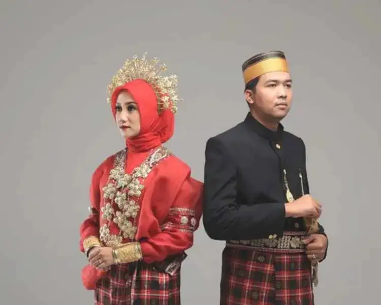
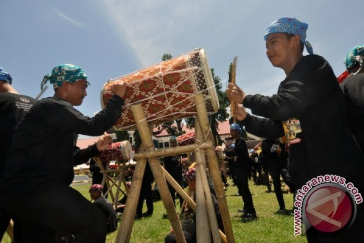

Informasi Daerah
Sulawesi Barat
Sulawesi Barat dikenal dengan julukan "Negeri Pahlawan" karena sejarah perjuangan rakyatnya yang gigih dalam mempertahankan kemerdekaan Indonesia. Sebelumnya, provinsi ini merupakan bagian dari Sulawesi Selatan sebelum menjadi
provinsi mandiri pada tahun 2004. Wilayah ini memiliki banyak suku dan budaya yang sangat beragam, serta keindahan alam yang masih alami.
Tarian Tradisional
- Tari Kipas: Tari tradisional Sulawesi Barat yang dilakukan dengan menggunakan kipas sebagai alat utama, diiringi oleh musik khas daerah. Tarian ini biasanya dipentaskan dalam acara adat atau pernikahan.
- Tari Kaba-kaba: Tarian dari suku Mandar yang menggambarkan kebahagiaan masyarakat, sering dimainkan dalam acara pesta atau perayaan adat.
- Tari Ma'peppaq: Tarian tradisional dari suku Bugis yang menggambarkan semangat persatuan dan kegembiraan dalam acara-acara adat.

Pakaian Adat
- Baju Adat Mandar: Pakaian adat yang dikenakan oleh pria dan wanita suku Mandar, terdiri dari baju berwarna cerah, kain sarung, dan perhiasan tradisional. Untuk wanita, dilengkapi dengan ikat kepala dan selendang.
- Baju Adat Bugis: Pakaian pria terdiri dari jas dan celana panjang, sementara wanita mengenakan baju kurung panjang dengan selendang dan aksesori tradisional.

Alat Musik
Alat musik tradisional Sulawesi Barat meliputi:
- Gong: Alat musik tradisional yang digunakan dalam berbagai upacara adat dan acara perayaan di Sulawesi Barat.
- Gimba: Sejenis alat musik perkusi yang sering digunakan dalam tarian atau upacara adat, memberikan ritme yang khas.
- Kendang Mandar: Alat musik sejenis drum yang digunakan untuk mengiringi tarian dan upacara adat.
- Suling: Alat musik tiup tradisional yang sering dimainkan dalam acara-acara adat, menghasilkan suara lembut yang menenangkan.
Kuliner
- Coto Mandar: Hidangan khas yang terdiri dari daging sapi atau kambing yang dimasak dengan kuah kaya rempah, mirip dengan coto Makassar namun dengan citarasa yang lebih ringan.
- Pallu Basa: Sup daging yang terbuat dari daging sapi atau kerbau, dimasak dengan bumbu rempah khas Sulawesi Barat.
- Bubur Tinutuan: Bubur khas yang terdiri dari beras, jagung, dan sayuran, disajikan dengan ikan atau daging, serta sambal khas.
- Sate Mandar: Sate khas dari Sulawesi Barat yang terbuat dari daging sapi atau ayam, dibumbui dengan rempah khas dan dipanggang di atas bara api.
- Kue Panada: Kue kecil berbentuk bulat yang diisi dengan ikan cakalang atau daging, dibungkus dengan adonan tepung, kemudian digoreng hingga garing.
Pariwisata
Destinasi wisata populer di Sulawesi Barat antara lain:
- Pantai Dato: Salah satu destinasi wisata pantai terkenal di Sulawesi Barat, dengan pasir putih dan air laut yang jernih, cocok untuk berenang dan berjemur.
- Taman Nasional Kepulauan Togean: Destinasi wisata bahari yang terkenal dengan keindahan terumbu karang dan kehidupan laut yang menakjubkan.
- Air Terjun Takapala: Air terjun yang terletak di daerah Mamuju, menjadi tempat wisata alam yang populer bagi para pengunjung yang ingin menikmati keindahan alam Sulawesi Barat.
- Pulau Kambuno: Pulau yang menawarkan pemandangan indah, cocok untuk snorkeling dan diving, serta menikmati suasana alam yang tenang dan alami.
- Kampung Adat Mandar: Salah satu tempat wisata yang memperkenalkan budaya dan kehidupan masyarakat suku Mandar, dengan berbagai upacara adat dan tradisi yang masih dilestarikan.